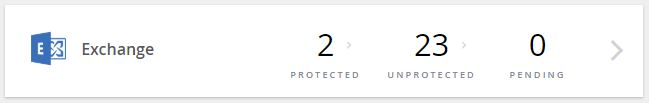
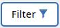
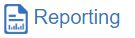
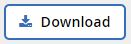
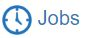

Viewing data with NetApp SaaS Backup for Office 365 Edit on GitHub Request doc changes
Contributors
You can filter data for specific results, use inline search to find what you need, and view the activity log for a list of all activity.
- Creating a user defined filter
- Performing a search inside Microsoft Exchange Online
- Performing a search inside Microsoft OneDrive for Business
- Performing a search inside Microsoft SharePoint Online
- Viewing Job History
- Viewing the Activity Log
- Downloading the Activity Log
- Downloading a log of completed jobs
Creating a user defined filter
You can filter the view of your mailboxes, sites, or MySites to only show results that fit specific criteria. For example, you can set your filters to only see mailboxes in a certain country and a certain department within that country.
-
From the Dashboard, click the number above PROTECTED or UNPROTECTED in the box of the service for which you want to create a filter.
The number above PROTECTED indicates the number of mailboxes, MySites, or groups that are currently protected by a backup policy. The number above UNPROTECTED indicates the number of mailboxes, MySites, or groups that are not protected by a backup policy.
 -
Click Filter.
 -
Click the Select drop-down menu, and select the filter of your choice.
For Microsoft SharePoint Online, you can filter by Template ID. You can enter the Template ID to search for it, or select it from the dropdown menu.
For all other services, you can filter by group, country, office, department, title, domain or country. If you have security groups, they are also listed as filtering options.The second drop-down menu is populated with selections based on the filter you select. For example, if you select Group as your first filter, you can select one of the backup policy group tiers as your secondary filter. image:select_filter.jpg[Screenshot of first set of filter options] A search field appears. . Enter your search criteria. . If you want to add more filters, click *Add Filter* and make your selection. . Click *Apply Filter*. Filter results are displayed.
Performing a search inside Microsoft Exchange Online
You can perform an inline search within an individual mailbox for specific content. This also applies to mailboxes that are part of an Office 365 Group.
-
From the Dashboard, click the number above PROTECTED or UNPROTECTED in Exchange box.
-
If you are searching PROTECTED mailboxes, click the email address for which you need to perform the search.
-
Select the category (Mail, Tasks, Contacts, Calendar, or Other) that you need to search.
-
Select file or folder from dropdown menu next to the search field to indicate if you are searching for a file or folder.
-
Type a search string in the search field.
The search is automatically performed and results are displayed after the search string is entered.
-
-
If you are searching UNPROTECTED mailboxes, select the mailbox you want to search.
-
Type a search string in the search field.
The search is automatically performed and results are displayed after the search string is entered.
-
Performing a search inside Microsoft OneDrive for Business
You can perform an inline search within an individual MySite for specific content.
-
From the Dashboard, click the number above PROTECTED in OneDrive box.
-
Click the MySite in which you need to perform the search.
-
Click the files that you need to search.
-
Type a search string in the search field.
The search is automatically performed and results are displayed after the search string is entered.
Performing a search inside Microsoft SharePoint Online
You can perform an inline search within an individual MySite for specific content. This also applies to sites that are part of an Office 365 Group.
-
From the Dashboard, click the number above PROTECTED in SharePoint box.
-
Click the site in which you need to perform the search.
-
Click the content category that you need to search.
-
Type the search string in the search field.
The search is automatically performed and results are displayed after the search string is entered.
Viewing Job History
NetApp SaaS Backup for Office 365 stores a log of all jobs that includes the job type, service, start time, end time, and completion status.
-
Click Reporting on the left navigation pane.

A list of all SaaS Backup jobs is displayed under the Job History tab. -
To filter the results, click Filter.
-
Click the Select drop-down menu, and select a filter.
You can filter by policy, service, or type. After you select a filter, a search field appears. -
Enter your search criteria.
-
If you want to add more filters, click Add Filter.
-
Click Apply Filter.

Filter results are displayed. -
Click any job to expand the view for additional job details.
Viewing the Activity Log
A log is stored of all activity that occurs inside SaaS Backup for Office 365. The log contains the date of each action performed along with the name of the user who performed the action. You can filter the activity log by service and event. For example, if you need to see all of the restore operations that have occurred for Microsoft Exchange Online, you can filter the activity log to view those specific results.
-
Click Reporting on the left navigation pane.
-
Click the Activity Log tab.
A list of all SaaS Backup for Office 365 activity is displayed. -
To filter the results, click Filter.
-
Click the Select drop-down menu, and select a filter.
You can filter by service or event. After you select a filter, a search field appears. -
Enter your search criteria.
-
If you want to add more filters, click Add Filter.
-
Click Apply Filter.
Filter results are displayed.
Downloading the Activity Log
A log is stored of all activity that occurs inside SaaS Backup for Office 365. The log contains the date of each action performed along with the name of the user who performed the action. You can download the activity log to a .csv file.
-
Click Reporting on the left navigation pane.
-
Click the Activity Log tab.
A list of all SaaS Backup for Office 365 activity is displayed. -
Click download.

The activity log is downloaded as a .csv file.
Downloading a log of completed jobs
You can download an Excel spreadsheet of successfully completed jobs.
-
Click Jobs from the left navigation pane
 -
Click the recently completed job that you want to download.
-
Click Successful under the number of successfully completed jobs.

-
Click Download in the top right.
The log is downloaded